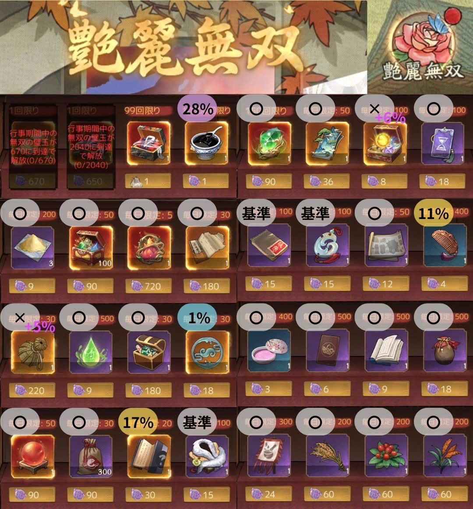

）を外して画像URLを入れてください -->

ここにプロジェクトの詳しい説明文を記述します。 テキストの行間（line-height）を広めに取っているため、スマートフォンなどの縦長画面でも文字がギュッと詰まらず、すっきりと読みやすいレイアウトになっています。
段落を分けたいときは、このように <p> タグで囲うことで、自動的に程よい隙間が空くように調整されています。アプリの概要、使い方、開発秘話など、たくさんの文章を書いても綺麗に収まります。